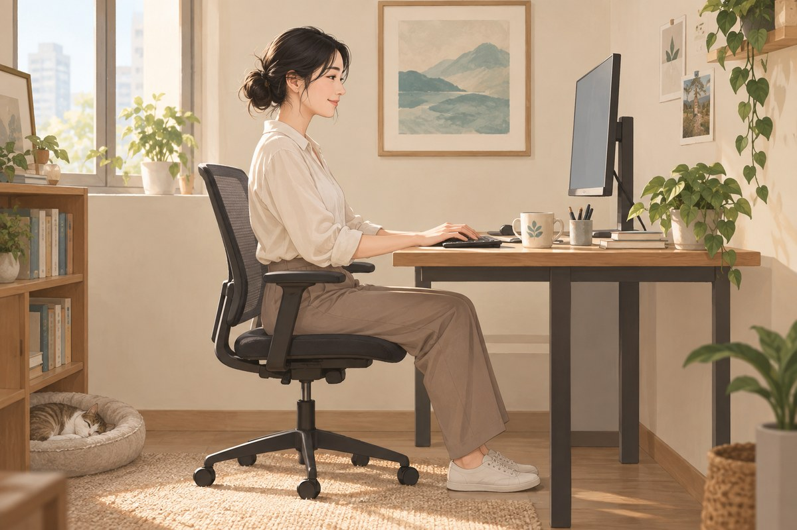

肩頸痛
肩頸痛可能只是短時間的肌肉緊繃，也可能與頸椎活動、肩胛控制、工作姿勢、睡眠、外傷或神經症狀有關。只知道「哪裡痛」通常不夠，還需要了解哪些動作會誘發、活動是否受限，以及疼痛有沒有延伸到手臂。
你是否有這些困擾？
- 久坐、用電腦或滑手機後肩頸越來越緊
- 轉頭、抬頭或低頭時有卡住或拉扯感
- 起床後脖子僵硬，活動一段時間才比較鬆
- 肩胛骨內側或上背反覆痠痛
- 疼痛延伸到手臂，伴隨麻、刺或無力
- 壓力大、睡眠不足時症狀更明顯
肩頸痛可能來自哪些位置？
肩頸區包含頸椎關節、椎間盤、肌肉、筋膜、韌帶與神經等結構。長時間維持同一姿勢、睡姿不合適、突然增加活動、外傷或局部組織負荷改變，都可能引起疼痛與僵硬。
疼痛位置接近，不代表來源一定相同。有人主要是頸部活動受限，有人是肩胛與上背控制不足，也有人伴隨神經受刺激的表現，因此治療前需要先做鑑別。
常見表現
局部緊繃與壓痛
後頸、上斜方肌、肩胛骨周圍可能出現痠脹、緊繃或明顯壓痛。長時間工作後加重，短暫休息、改變姿勢或熱敷後可能有所變化。
頸部活動受限
轉頭、低頭或抬頭的角度減少，動作過程可能出現卡住、拉扯或刺痛。開車回頭、看高處及洗頭等日常動作可能受到影響。
手臂與神經相關症狀
若疼痛延伸到肩膀、手臂或手指，並伴隨麻木、針刺感、握力下降或手臂無力，需要進一步評估神經是否受到影響。
常見相關因素
- 長時間使用電腦、手機或維持同一姿勢
- 枕頭高度、睡姿或睡眠品質不佳
- 突然增加重量訓練、搬重物或重複性工作
- 肩胛與胸椎活動不足，頸部長期代償
- 跌倒、車禍或運動外傷
- 情緒壓力、呼吸習慣與全身疲勞
姿勢可能影響負荷，但不能只看外觀就判定疼痛原因。評估時更重要的是疼痛與動作、時間及功能限制之間的關係。
可以先觀察什麼？
記錄最不舒服的位置、疼痛是否延伸、哪些方向受限，以及工作多久後開始不適。也可觀察改變桌椅高度、增加短暫活動或調整睡姿後，症狀是否有所不同。
不要為了測試而反覆強力轉頸、甩動或讓他人用力扳頸。若動作引起明顯麻木、電擊感、頭暈或無力，應停止並接受評估。
什麼情況需要盡快就醫？
若疼痛發生在車禍、跌倒或撞擊後，或伴隨手臂明顯無力、持續麻木、手部變冷、走路不穩、嚴重頭痛、發燒、意識改變或症狀快速惡化，應儘快就醫。突發胸痛、呼吸困難或疼痛延伸至下巴與手臂時，也應優先排除心血管問題。
連邦中醫如何評估肩頸痛？
醫師會先了解疼痛位置、持續時間、誘發動作、外傷史與工作型態，再檢查頸部與肩胛活動、局部壓痛及左右差異。若有麻木、疼痛延伸或無力，也會進一步確認神經相關表現。
評估重點不是只找一個「最硬的點」，而是判斷疼痛來源、動作限制與日常負荷。若症狀需要影像、神經學或其他專科檢查，會先安排適當轉介。
針灸傷科診療方向
肩頸痛在中醫可從頸項痛、痹證與筋傷等方向辨證。除了疼痛位置與活動受限，還會觀察疼痛的冷熱、輕重、固定或游走、是否曾有拉傷，以及疲勞與天氣變化的影響。常見方向包括：
風寒濕阻絡
肩頸冷痛、沉重緊繃，遇冷或潮濕時加重，熱敷後較舒服。治療以祛風散寒、除濕通絡為主。
氣滯血瘀或筋傷
扭拉傷或長時間固定姿勢後出現疼痛，痛點較固定、按壓明顯，轉頭或抬手受限。治療著重行氣活血、舒筋通絡。
氣血不足或肝腎虧虛
疼痛反覆日久，以痠軟無力為主，常在疲勞後加重。治療會依全身表現採取益氣養血、濡養筋脈，或補益肝腎的方向。
辨證之外，仍需配合解剖位置、肌肉張力、關節活動度及神經症狀評估。
連邦中醫的治療方式
一般針灸與不留針
依疼痛位置、肌肉張力、活動限制及患者接受度安排，處理頸肩與肩胛周圍相關區域。不留針適合不便久留針或對留針較緊張者，仍需由醫師依當次狀況評估。
浮針與針刀
浮針與針刀的操作層次及適用情況不同。醫師會先確認疼痛來源、解剖位置、組織層次與風險，不會只因為疼痛時間較久就直接使用。
針灸整合物理治療
若肩頸痛與頸部活動、胸椎僵硬、肩胛控制或工作動作密切相關，可將針灸與活動度、姿勢及動作訓練放在同一個治療安排中。實際組合依每次評估與身體反應調整。
日常照護
- 避免長時間固定同一姿勢，每隔一段時間起身活動
- 將螢幕、桌椅與常用物品調整到不需長時間低頭的位置
- 選擇不會讓頸部過度彎曲的枕頭高度
- 急性疼痛時不要強迫拉到最緊或反覆甩動頸部
- 症狀穩定後，再逐步恢復頸部、胸椎與肩胛活動

常見問題
肩頸痛可以用中醫治療嗎？
可以。針灸是肩頸疼痛常用的非藥物治療方式，可依疼痛位置、肌肉張力、活動限制與中醫證型安排。對於久坐緊繃、活動受限或反覆痠痛，經過正確評估並搭配適合的針灸、傷科處理與動作調整後，治療目標是改善疼痛程度與頸部活動，實際變化需依回診評估追蹤。
痛很久了，中醫治療還有效嗎？
慢性肩頸痛仍可評估中醫治療。病程較久時，除了處理疼痛部位，也要一起處理胸椎活動、肩胛控制、工作負荷與反覆誘發因素。治療方式可能包含一般針灸、不留針、浮針、針刀或針灸整合物理治療，由醫師依實際問題選擇。
肩頸痛一定是姿勢不良嗎？
不一定。姿勢只是可能因素之一，睡眠、工作負荷、外傷、活動不足、壓力與神經問題都可能參與，需要依症狀與檢查判斷。
有手麻可以直接針灸嗎？
應先確認麻木的範圍、持續時間及是否伴隨無力。若出現神經警訊或症狀快速惡化，需要先接受進一步檢查。
針刀和浮針應該怎麼選？
兩者的操作層次與評估方式不同，不能只依疼痛名稱自行選擇。醫師會依疼痛來源、解剖位置、活動限制與風險個別判斷。
🏥 讓專業團隊成為您的健康後盾
就診時可說明疼痛位置、持續時間、誘發動作、外傷史及麻木或無力的情況，並攜帶目前用藥及檢查資料。
105 臺北市松山區南京東路四段69號1樓